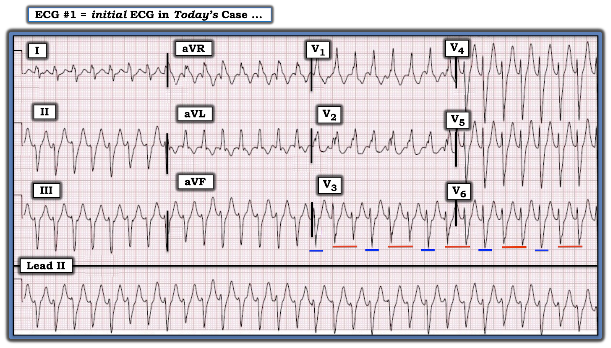
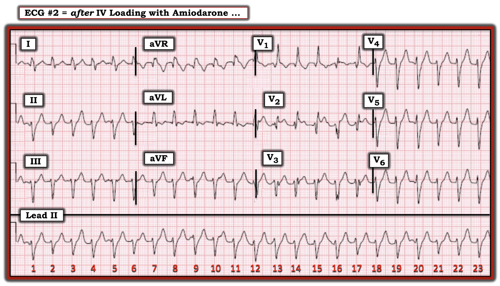
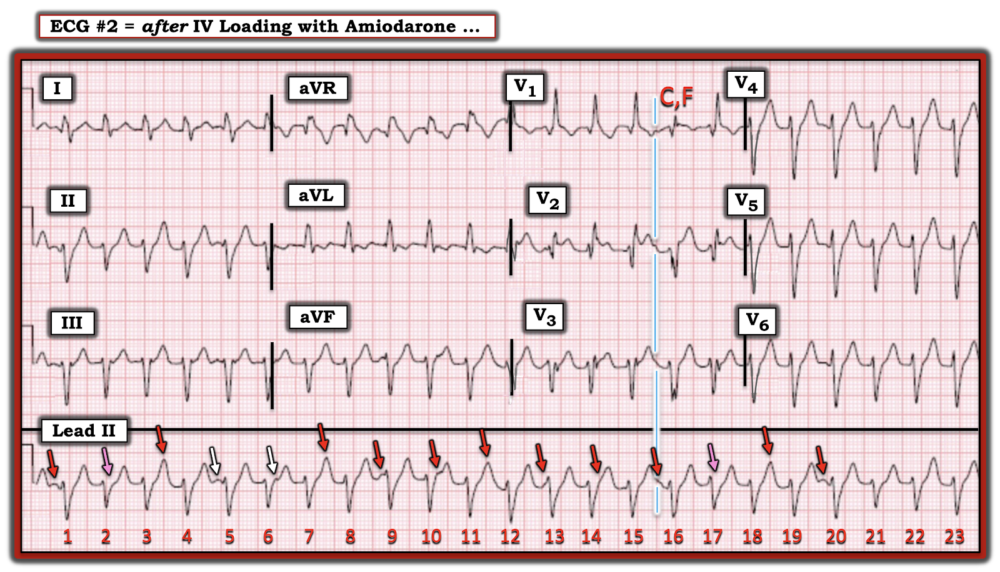
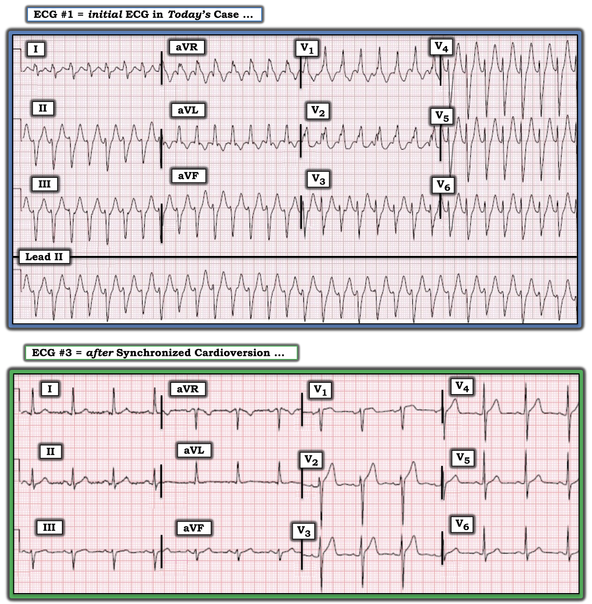

ECG Blog #314 — Bệnh nhân 79 tuổi bị hồi hộp đánh trống ngực
Một người đàn ông 79 tuổi đến khám vì hồi hộp đánh trống ngực (palpitations), với điện tâm đồ như trong Hình-1. Bệnh nhân có tiền sử bệnh mạch vành. Ông ổn định huyết động tại thời điểm ghi bản ghi này.
CÂU HỎI:
- BẠN sẽ diễn giải điện tâm đồ trong Hình-1 như thế nào?
- Bạn chắc chắn đến mức nào về chẩn đoán của mình?

Cách tiếp cận CỦA TÔI với điện tâm đồ trong Hình-1:
Chúng ta được biết bệnh nhân có điện tâm đồ ban đầu trong Hình-1 — ổn định huyết động. Theo Cách tiếp cận Ps, Qs, 3R (như đã trình bày trong ECG Blog #185):
- Có một WCT đều ( = nhịp nhanh QRS rộng — Wide-Complex Tachycardia) tần số ~190/phút, không có dấu hiệu rõ của hoạt động nhĩ.
- Mặc dù hình dạng QRS thoạt nhìn giống RBBB/LAHB — hình dạng QRS lại không điển hình cho kiểu blốc hai phân nhánh (bifascicular block) trên thất này vì: i) Không có dạng rsR' ba pha ở chuyển đạo V1 (thay vào đó, sóng R ở chuyển đạo V1 có dạng "trát đậm" (slurred)); ii) Sóng r khởi đầu ở các chuyển đạo dưới rất nhỏ; và, iii) Sóng R ở chuyển đạo I rộng hơn dự kiến — còn sóng S ở chuyển đạo này lại hẹp hơn nhiều so với dự kiến đối với dẫn truyền kiểu RBBB.
Nhận định
của Tôi:
Chúng ta được biết bệnh nhân trong ca hôm nay là một người đàn ông 79 tuổi có bệnh mạch vành đã biết. Điều này có nghĩa là ngay cả trước khi nhìn vào điện tâm đồ trong Hình-1 — xác suất thống kê để một nhịp WCT đều không có dấu hiệu rõ của hoạt động nhĩ hóa ra là VT là lớn hơn 90% khi bệnh nhân là người lớn tuổi có bệnh tim nền.
- Với các đặc điểm không điển hình của hình dạng QRS so với dẫn truyền trên thất đã nêu ở trên — tôi ước tính khả năng thống kê là VT đối với bản ghi trong Hình-1 còn cao hơn nữa (tức là, có lẽ khả năng là VT ~95%).
- Xin nhấn mạnh: Khả năng VT 95% không phải là khả năng 100%. Dù vậy — Với xác suất như thế rằng nhịp trong Hình-1 là VT — nhịp này cần được xử trí như VT cho đến khi chứng minh được điều ngược lại!
VT phân nhánh:
Vì hình dạng QRS giống kiểu blốc hai phân nhánh (tức là, giống RBBB kèm LAHB) — nhịp trong Hình-1 được gọi là VT phân nhánh (fascicular VT).
- Như đã bàn trong ECG Blog #197 — VT phân nhánh là một trong những dạng thường gặp nhất của VT vô căn (idiopathic VT) khi nhịp này xảy ra ở người trưởng thành trẻ tuổi không có bệnh tim nền. Tuy nhiên, bệnh nhân trong ca hôm nay không phải là người trẻ — và ông có bệnh mạch vành đã biết. Do đó — tôi sẽ xử trí nhịp này như một dạng VT do thiếu máu cục bộ (tức là, có lẽ không nên dùng Verapamil).
==========================
ĐIỂM NÂNG CAO:
Hãy NHÌN lại nhịp trong Hình-1. BẠN có để ý biên độ QRS thay đổi ở một số chuyển đạo không?
CÂU HỎI:
- Sự thay đổi có nhịp điệu của biên độ QRS thấy ở một số chuyển đạo trên bản ghi ban đầu hôm nay là gì? (Xem Hình-2).
- Hiện tượng này có những ý nghĩa lâm sàng tiềm tàng nào?


Điện thế Luân phiên:
Như đã bàn chi tiết trong ECG Blog #83 — kiểu thay đổi biên độ QRS lặp đi lặp lại ở một số chuyển đạo trong Hình-2 phù hợp với điện thế luân phiên (electrical alternans).
- Định nghĩa điện thế luân phiên — là sự thay đổi từng-nhát-một ở bất kỳ một hay nhiều thành phần nào của bản ghi điện tâm đồ (tức là, về kích thước hoặc hình dạng của QRS, sóng ST-T hoặc sóng P — hoặc của khoảng R-R và/hoặc hiếm hơn là khoảng PR hoặc QTc).
- ĐIỂM THEN CHỐT (PEARL) #1: Mặc dù nhiều thầy thuốc cho rằng sự biến đổi có tính chu kỳ của điện thế luân phiên phải xảy ra cách một nhát — điện thế luân phiên có thể xảy ra theo một tỉ lệ lặp lại khác (tức là, 3:1, 4:1 — hoặc, như các đường ĐỎ và XANH trong Hình-2 gợi ý — theo tỉ lệ 3:2).
- Có 3 loại cơ bản của hiện tượng điện thế luân phiên, liên quan đến các cơ chế sinh lý bệnh khác nhau (tức là, luân phiên tái cực — luân phiên dẫn truyền — và/hoặc luân phiên do chuyển động của tim — Xem ECG Blog #83).
- ĐIỂM THEN CHỐT (PEARL) #2: Mặc dù điện thế luân phiên không phải là hiện tượng thường gặp — việc nhận ra dấu hiệu điện tâm đồ này thật sự hữu ích. Lý do là trong bối cảnh lâm sàng phù hợp, sự hiện diện của điện thế luân phiên có thể gợi ý: i) Tràn dịch màng ngoài tim đáng kể kèm chèn ép tim; và/hoặc, ii) Một cơ chế vào lại của một nhịp SVT (tức là, AVNRT — và đặc biệt là AVRT qua một đường phụ).
- CẢNH BÁO: Mặc dù việc nhận ra điện thế luân phiên trong một nhịp nhanh đều QRS rộng hoặc hẹp không có sóng P xoang gợi ý mạnh đến cơ chế vào lại của nhịp — điện thế luân phiên đôi khi có thể xảy ra kèm VT (đây chính xác là điều chúng ta nghi ngờ trong ca hôm nay!).
==========================
CA BỆNH tiếp diễn:
Mặc dù có điện thế luân phiên — những người thầy thuốc tại hiện trường vẫn nghi ngờ nhịp trong Hình-1 là VT. Họ điều trị bệnh nhân bằng liều nạp Amiodarone tĩnh mạch (IV). Ngay sau đó — điện tâm đồ trong Hình-3 được ghi lại.
CÂU HỎI:
- Amiodarone IV đã có tác dụng gì lên nhịp?
- Điện tâm đồ trong Hình-3 (ghi sau khi nạp Amiodarone IV) giúp bạn chắc chắn hơn về chẩn đoán của mình NHƯ THẾ NÀO? (GỢI Ý: Câu trả lời cho câu hỏi này rất tinh tế!).


Phân ly Nhĩ thất (AV Dissociation):
Tôi đã nhiều lần ôn lại các tiêu chuẩn đánh giá một nhịp WCT đều không có dấu hiệu rõ của hoạt động nhĩ — nhằm phân biệt giữa VT với SVT kèm dẫn truyền lệch hướng hoặc BBB có từ trước (blốc nhánh — Bundle Branch Block) — Xem ECG Blog #220 (cùng nhiều bài khác) để biết chi tiết.
- Ở trên tôi đã nêu một số đặc điểm hình dạng trên bản ghi hôm nay không điển hình cho dẫn truyền trên thất.
- Ngoài các tiêu chuẩn hình dạng — một trong những tiêu chuẩn được tìm kiếm nhiều nhất để phân biệt nhịp VT với SVT — là sự hiện diện của phân ly nhĩ thất, trong đó có thể xác định được trong cơn WCT một nhịp nhĩ nền đều, độc lập với nhịp QRS rộng. Khi thấy phân ly nhĩ thất thật sự — điều đó gần như chứng minh nhịp QRS rộng phải là VT (Xem ECG Blog #133 và Blog #151 để xem các ví dụ về phân ly nhĩ thất).
- Dù vậy — phân ly nhĩ thất không thường giúp ích trong chẩn đoán VT. Lý do là những nhịp nhanh QRS rộng mà bạn cần trợ giúp để chẩn đoán lại là những nhịp nhanh hơn (tức là, thường nhận ra các dạng nhịp nhanh thất chậm hơn dễ hơn nhiều). Vấn đề là tần số nhanh của các nhịp VT nhanh thường che lấp hoạt động nhĩ, vốn có xu hướng bị ẩn trong phức bộ QRS hoặc sóng ST-T.
- ĐIỂM THEN CHỐT (PEARL) #3: Theo kinh nghiệm của tôi — "phân ly nhĩ thất" bị chẩn đoán quá mức rất nhiều! Điều này quan trọng vì khi một thầy thuốc "nghĩ" mình thấy phân ly nhĩ thất — có xu hướng coi đó là "bằng chứng" của VT — trong khi thực ra phân ly nhĩ thất thật sự không hề có. Ca hôm nay là một ngoại lệ — vì phân ly nhĩ thất thật sự có hiện diện.
Đánh giá CỦA TÔI về điện tâm đồ #2:
MẤU CHỐT để chứng minh có phân ly nhĩ thất thật sự — là xác định được một nhịp nhĩ nền đều. Điều này không làm được với điện tâm đồ #1 (trong Hình-1 và -2) — vì tần số của nhịp nhanh QRS rộng trên bản ghi ban đầu của ca hôm nay rất nhanh (tức là, ~190/phút).
- Tần số của nhịp nhanh QRS rộng chậm hơn đáng kể trên điện tâm đồ #2 (tức là, ~140/phút — như thấy trong Hình-3, ghi sau khi nạp Amiodarone IV).
- Như đã đề cập ở trên — nhịp nhĩ nền độc lập đi kèm VT có thể rất kín đáo. HÃY BẮT ĐẦU bằng cách xác định 2 dao động liên tiếp trên dải nhịp chuyển đạo II dài trông giống sóng P nền (2 mũi tên TRẮNG trong Hình-4). Chỗ khía ngay sau QRS của nhát #6 (mũi tên TRẮNG thứ 2) — không thấy sau bất kỳ QRS nào khác (ngoại trừ có lẽ ngay sau QRS của nhát #10) — điều này gợi ý mạnh rằng các dao động được đánh dấu bằng 2 mũi tên TRẮNG là "thật", và đại diện cho 2 sóng P xoang liên tiếp.
- Đặt compa đo (calipers) bằng khoảng cách giữa 2 mũi tên TRẮNG này cho ta ước lượng khoảng P-P.
- Giờ đây có thể "dò bước" (walk out) bằng compa các sóng P xoang nền đúng lúc (mũi tên ĐỎ) qua gần như toàn bộ dải nhịp chuyển đạo dài.
- Các mũi tên HỒNG giải thích vì sao sóng P không được thấy (tức là, một sóng P đúng lúc sẽ rơi vào trong, và bị vùi lấp bởi phức bộ QRS của nhát #2 và 17).
- Nhận định Của tôi: Nạp Amiodarone IV đã làm chậm được tần số thất của nhịp WCT đều từ ~190/phút (trên điện tâm đồ #1) — xuống ~140/phút (trên điện tâm đồ #2). Ngoài một vài thay đổi về biên độ QRS — hình dạng QRS rất giống nhau ở cả 12 chuyển đạo của hai bản ghi. Việc phát hiện một nhịp nhĩ nền đều (các mũi tên màu trong Hình-4) hoàn toàn độc lập với nhịp nhanh QRS rộng đã xác nhận phân ly nhĩ thất, điều này chứng minh rằng nhịp này là VT.


Nhát Hỗn hợp và Bắt được:
Một xác nhận thêm rằng nhịp trong ca hôm nay là VT — đến từ sự hiện diện của một nhát "bắt được" (capture beat), nhát này có lẽ biểu hiện một phần "hỗn hợp" (fusion).
- Như đã bàn chi tiết trong ECG Blog #128 và Blog #129 — các nhát "bắt được" xảy ra trong một chuỗi VT đang diễn ra khi một hay nhiều sóng P xoang đúng lúc xuất hiện vào "đúng thời điểm" để (các) sóng P này có thể tạm thời cắt ngang chuỗi nhát VT bằng cách "bắt" thoáng qua tâm thất với một nhát dẫn truyền từ xoang.
- Các nhát "hỗn hợp" xảy ra do xung động trên thất và xung động thất xuất hiện đồng thời (hoặc gần đồng thời). Kết quả là — mặt sóng khử cực trên thất và mặt sóng khử cực thất gặp nhau trước khi chúng kịp hoàn tất đường đi của mình — và hình ảnh trên điện tâm đồ của nhát hỗn hợp tạo thành mang đặc điểm của cả nhát trên thất lẫn nhát thất.
- Trong Hình-4 — Hãy chú ý phức bộ QRS của nhát #16 trông khác biệt thế nào ở chuyển đạo V1 và V2 so với mọi phức bộ QRS khác ở 2 chuyển đạo này. Đường thời gian thẳng đứng màu XANH kéo lên từ sóng P trước nhát #16 xảy ra vào "đúng thời điểm" — để nó có thể dẫn truyền một phức bộ dạng RBBB trông khác đi, nhiều khả năng kèm một mức độ hỗn hợp nào đó (tức là, "C" và "F" ở chuyển đạo V1 của Hình-4).
CA BỆNH tiếp diễn:
Không may — việc dùng Amiodarone IV đã gây tụt huyết áp. Điều này buộc phải sốc điện chuyển nhịp đồng bộ ngay lập tức. Hình-5 so sánh nhịp WCT đều ban đầu với kết quả sau sốc điện chuyển nhịp đồng bộ. Điều gì đã xảy ra?


KẾT LUẬN CA BỆNH:
Như thấy trong Hình-5 — sốc điện chuyển nhịp đồng bộ đã chuyển VT về nhịp xoang. Hãy chú ý hình dạng QRS khi nhịp xoang (tức là, trên điện tâm đồ #3) — khác biệt rất nhiều so với hình dạng QRS trên bản ghi ban đầu (trên điện tâm đồ #1). Điều này loại trừ khả năng một rối loạn dẫn truyền có từ trước là nguyên nhân của nhịp nhanh QRS rộng.
- Không thấy thay đổi ST-T cấp tính nào trên bản ghi sau chuyển nhịp ( = điện tâm đồ #3).
- Bệnh nhân được thông tim — nhưng không phát hiện tổn thương đáng kể nào có thể hưởng lợi từ tái thông mạch máu.
- Bệnh nhân được đặt ICD (máy khử rung tim cấy được — Implanted Cardioverter Defibrillator) — và được xuất viện. Khi theo dõi sau đó — bệnh nhân không bị VT tái phát.
==================================
Lời cảm ơn: Xin cảm ơn 林柏志 (từ Đài Loan) đã cung cấp ca bệnh và bản ghi này.
==================================
Các bài ECG Blog liên quan đến ca hôm nay:
- ECG Blog #205 — Ôn lại Cách tiếp cận Hệ thống của tôi trong đọc điện tâm đồ 12 chuyển đạo.
- ECG Blog #185 — Ôn lại Hệ thống của tôi để Phân tích Nhịp, sử dụng Cách tiếp cận Ps, Qs & 3R.
- ECG Blog #210 — Ôn lại Phương pháp Cách-Một-Nhát để ước tính tần số tim nhanh — và bàn về một ca khác có nhịp WCT đều.
- ECG Blog #83 — Ôn lại hiện tượng Điện thế Luân phiên.
- ECG Blog #203 — Ôn lại hình dạng QRS dự kiến của các Blốc phân nhánh và Blốc hai Phân nhánh (tức là, LAHB, LPHB; RBBB/LAHB; RBBB/LPHB).
- ECG Blog #204 — Ôn lại hình dạng QRS dự kiến của các Blốc Nhánh Bó His (tức là, RBBB, LBBB, IVCD).
- ECG Blog #211 — Ôn lại lý do xảy ra Dẫn truyền Lệch hướng (kèm minh họa các đặc điểm hình dạng QRS giúp dự đoán dẫn truyền lệch hướng).
- ECG Blog #196 — Ôn lại một Ca khác có Nhịp WCT Đều.
- ECG Blog #197 — VT Vô căn là gì? — TẠI SAO chúng ta cần quan tâm? Đặc biệt chú ý 2 dạng thường gặp nhất = RVOT VT và VT phân nhánh.
- ECG Blog #220 — Nghiên cứu ca bệnh ôn lại các tiêu chuẩn để Phân biệt giữa VT với SVT kèm BBB có từ trước hoặc dẫn truyền lệch hướng (bao gồm Audio Pearl MP-37 — Bệnh nhân có ổn định huyết động không?).
- ECG Blog #38 và Blog #85 — Ôn lại về VT phân nhánh.
- ECG Blog #35 — Ôn lại về RVOT VT (VT đường ra thất phải).
- ECG Blog #42 — Ôn lại toàn diện các tiêu chuẩn phân biệt VT với Dẫn truyền lệch hướng.
- ECG Blog #128 và Blog #129 — Ôn lại khái niệm Nhát Hỗn hợp.
- ECG Blog #133 và Blog #151 — Ôn lại cách dùng Phân ly Nhĩ thất để Chẩn đoán VT.